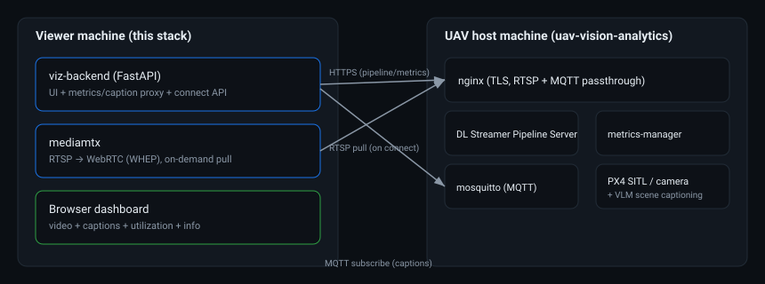

This viewer runs on a separate machine from the UAV stack. It pulls the
RTSP (M-JPEG) stream and relays it to the browser as a plain HTTP
multipart/x-mixed-replace MJPEG stream (no WebRTC/ICE, no
extra ports — see VIDEO_DELIVERY_COMPARISON.md), reads
pipeline/model info from the DL Streamer Pipeline Server's REST API,
proxies CPU/GPU/NPU utilization from metrics-manager, and
bridges scene captions from MQTT — all via nginx on the remote host.
